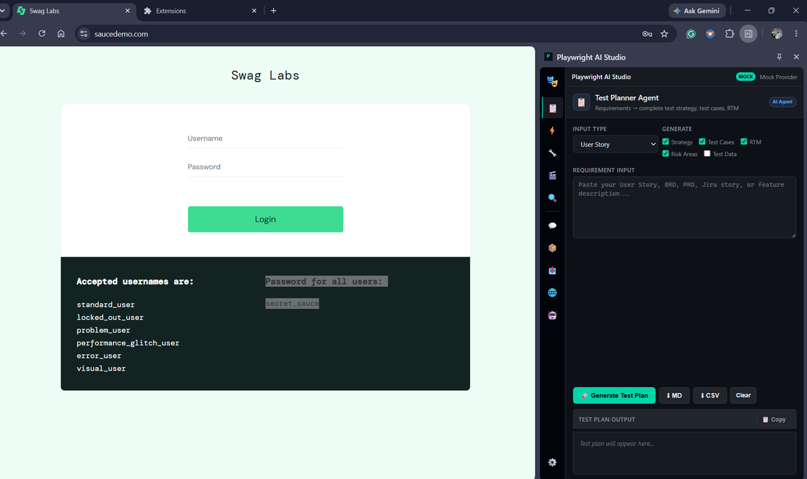
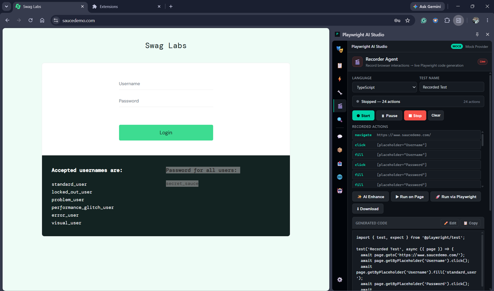
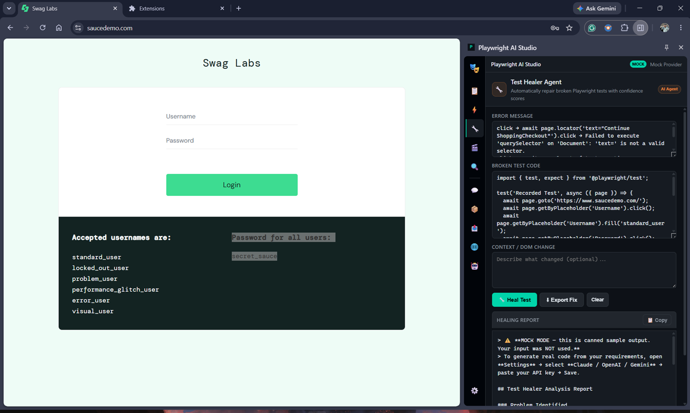
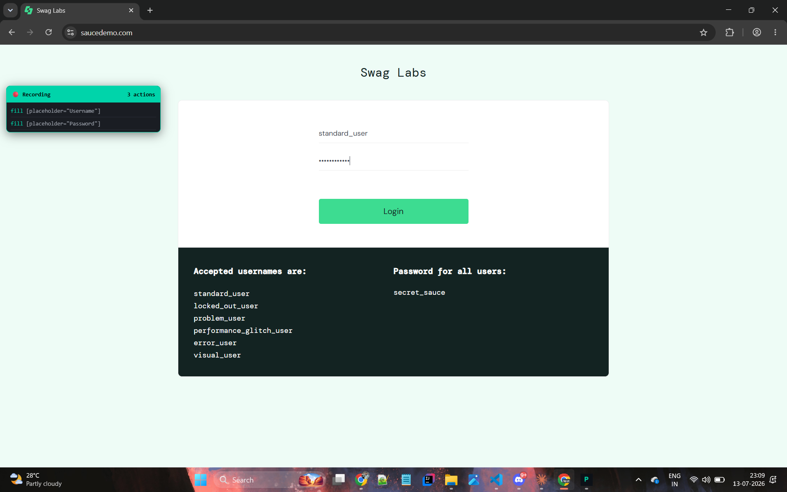
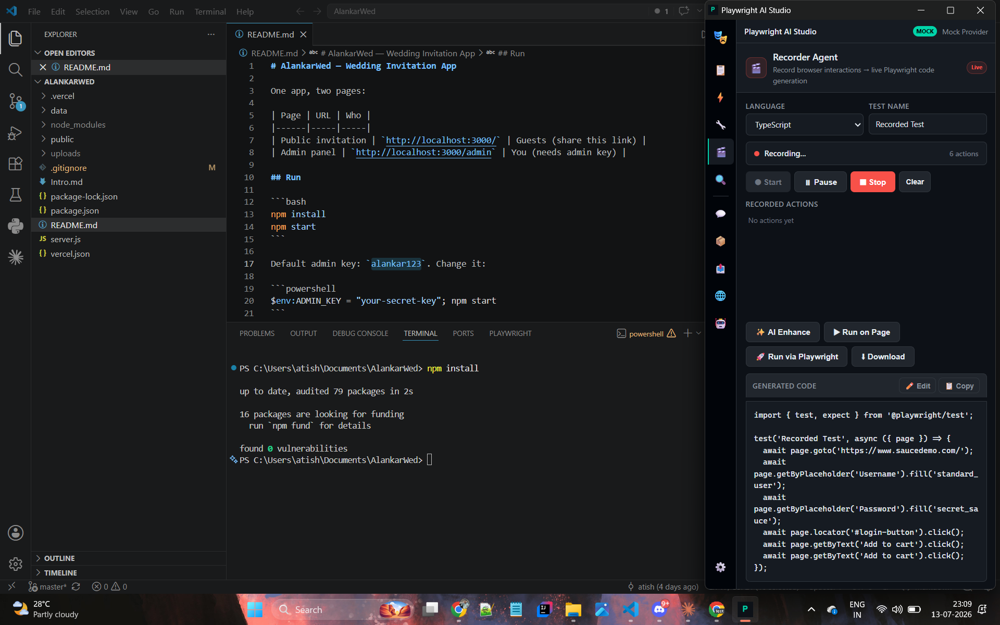
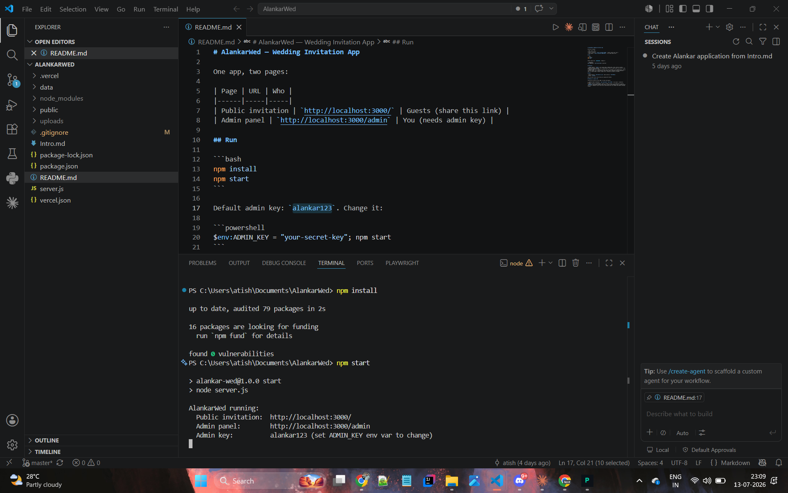

AI agents for Playwright QA, built into your browser.
Plan, generate, record, and self-heal Playwright tests without leaving the page under test. Playwright AI Studio pairs a side-panel agent suite with a local Bridge for real headed test runs.
Problem
Manual QA is slow to plan and script, and locator-based Playwright suites rot the moment the DOM changes. Existing AI coding tools live outside the browser, disconnected from the page you're actually testing.
Solution
A Chrome side panel with dedicated agents — Planner, Generator, Healer, Recorder, Inspector, Chat — that read the live page, generate real Playwright code, and repair broken locators, backed by a local Bridge for headed test runs and a standalone Orchestrator CLI for full multi-agent pipelines.
Agent suite
Planner
User story / BRD / Jira input → test strategy, functional & regression cases, RTM.
Generator
Turns a test plan into executable Playwright code — single test or full suite.
Healer
Diagnoses locator/timeout/DOM failures and proposes a fixed, confidence-scored patch.
Recorder
Records real browser interactions and streams them into valid Playwright code live.
Inspector
Highlights elements, validates locators, suggests the most stable selector.
Chat
Embedded QA assistant for Playwright, frameworks, CI/CD, and API/accessibility testing.
Screenshots






Install
- Download the extension .zip
- Unzip it anywhere on disk.
- Open
chrome://extensionsin Chrome. - Enable Developer mode (top right).
- Click Load unpacked and select the unzipped folder.
- Open any page and launch the Playwright AI Studio side panel.
No build step, no API key required to start — the extension ships with a Mock AI provider. Add a Claude / OpenAI / Gemini key, or run the local Bridge server, for real runs and live LLM output.
Download Extension (.zip)